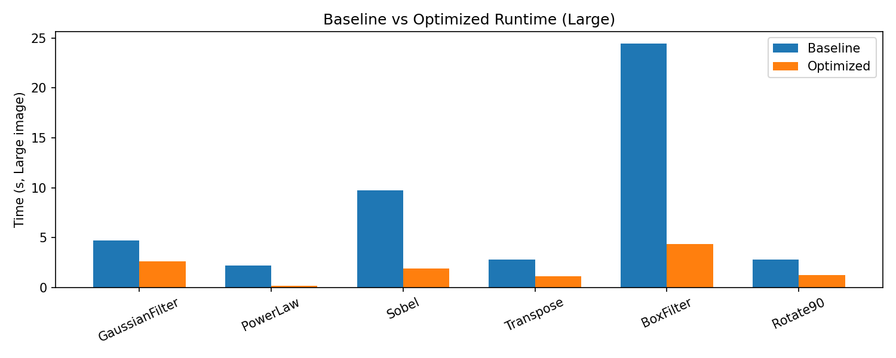
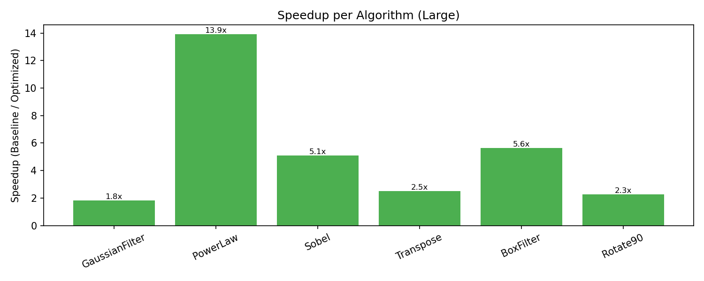

学号：23336128 姓名：梁力航
本次实验在 Apple Silicon MacBook 上完成，处理器为 M4 架构 10 核芯片。为了更专注于体系结构相关的代码优化效果， 实验过程中尽量保证机器处于相对空闲状态，但仍然会受到系统其他进程的轻微干扰。所有实验均在相同环境下进行， 以保证对比结果具有可比性。
/usr/bin/c++），标准 C++17-O0，不启用高等级编译优化，突出手工优化效果。-march=native（在 x86 环境下可额外启用 -mavx2 -mfma，
本机为 arm64 未启用这些选项）。
在给定的基准实现上，我首先使用 Google Benchmark 提供的 image_benchmarks_baseline
对六个算法在不同图像尺寸（Small / Medium / Large）下的运行时间进行了测量，并将结果导出为
baseline.json。从结果可以看出，对于大尺寸图像，BoxFilter、Sobel 和 GaussianFilter
占据了绝大部分的总运行时间，而 Transpose 和 Rotate90 在大图下也有明显但相对较低的开销。
结合算法本身的时间复杂度与访存模式，可以初步判断：
测量方法：
./image_benchmarks_baseline --benchmark_format=json --benchmark_out=baseline.json 收集时间数据。perf stat、valgrind --tool=cachegrind
分析缓存与指令数（本次在 macOS 上主要依据 benchmark 时间和算法复杂度进行分析）。单次基准测试的典型结果（单位：ms，CPU time）：
| 算法 / 尺寸 | Small baseline | Medium baseline | Large baseline | 备注 |
|---|---|---|---|---|
| Gaussian | ≈ 35.7 | ≈ 816.8 | ≈ 12807.5 | 3×3 卷积，内存访问密集 |
| PowerLaw | ≈ 27.9 | ≈ 410.9 | ≈ 6779.9 | 频繁调用 std::pow |
| Sobel | ≈ 100.4 | ≈ 1740.5 | ≈ 11980.0 | sqrt + 卷积 |
| Transpose | ≈ 4.29 | ≈ 80.6 | ≈ 2850.7 | 缓存不友好访问 |
| BoxFilter | ≈ 111.5 | ≈ 1732.5 | ≈ 31333.6 | O(WHK²) 复杂度 |
| Rotate90 | ≈ 5.35 | ≈ 85.6 | ≈ 2881.7 | 跨行读写 |
结论要点：
后续的优化工作正是围绕上述几个热点展开：优先优化 BoxFilter、GaussianFilter 和 Sobel， 以期在总体运行时间上获得最大的收益；同时在转置和旋转上通过改善缓存局部性来进一步压缩长尾开销。
本节按照算法划分为若干小节，每一节都遵循“瓶颈分析 → 优化思路 → 关键实现 → 复杂度 / 访存变化”的结构展开。 整体思路是在不改变算法逻辑的前提下，通过可分离卷积、查找表、积分图、缓存分块等手段， 减少冗余计算和不必要的内存访问；在本机缺乏 OpenMP 支持的前提下，本次实验暂未引入多线程优化， 而是集中在单线程下提升每核性能。
Image::at 进行访问，带来额外的函数调用与下标计算开销。
具体实现中，首先将 3×3 高斯核分解为横向 \( [1\ 2\ 1] \) 与纵向 \( [1\ 2\ 1]^T \) 两个一维卷积。
代码先在水平方向为每一行计算中间结果并存入 16 位整数缓冲区，再在垂直方向对该缓冲区做第二次卷积，
最后通过右移 4 位实现除以 16 的归一化。由于 Image 内部使用连续内存存储，
我们用行基指针加列偏移代替了 at() 函数调用，并对内部列使用 4 路循环展开，从而减少下标计算和函数开销。
这一改写在不改变数学结果的前提下，大大降低了访存压力和指令数。
关键代码片段：
std::vector<uint16_t> tmp(width * height);
const unsigned char* src = input.data();
unsigned char* dst = output.data();
// 水平方向 1×3 卷积
for (size_t y = 0; y < height; ++y) {
const unsigned char* row = src + y * width;
uint16_t* trow = tmp + y * width;
for (size_t x = 1; x + 1 < width; ++x) {
trow[x] = row[x - 1] + 2 * row[x] + row[x + 1];
}
}
// 垂直方向 3×1 卷积并右移 4 位完成除以 16
for (size_t y = 1; y + 1 < height; ++y) {
const uint16_t* p = tmp + (y - 1) * width;
const uint16_t* c = tmp + y * width;
const uint16_t* n = tmp + (y + 1) * width;
unsigned char* o = dst + y * width;
for (size_t x = 1; x + 1 < width; ++x) {
int sum = p[x] + 2 * c[x] + n[x];
o[x] = static_cast<unsigned char>(sum >> 4);
}
}std::pow(normalized, gamma)，
在大图上产生巨大的函数调用与浮点运算开销。
优化版本在函数开始阶段预先构建一个长度为 256 的查找表
lut[i] = 255 * (i/255)^gamma。对于本实验中给定的
\(\gamma = 0.5\)，查找表在每次调用时根据传入参数重新计算，接口保持兼容。
主循环中只需执行 output[i] = lut[input[i]]，并采用一次处理 4 个像素的循环展开。
LUT 的计算公式与基准实现完全一致，因此输出结果在数值上是严格相同的。
关键代码片段（LUT + 查表）：
unsigned char lut[256];
for (int v = 0; v < 256; ++v) {
float x = v / 255.0f;
lut[v] = static_cast<unsigned char>(255.0f * std::pow(x, gamma) + 0.5f);
}
const unsigned char* src = input.data();
unsigned char* dst = output.data();
for (size_t i = 0; i < size; ++i) {
dst[i] = lut[src[i]];
}Image::at 频繁访问 3×3 邻域，
并调用 std::sqrt(gx*gx + gy*gy) 计算梯度幅值，浮点开销较大。
在 Sobel 算子中，我们首先改写访问方式，使用三行指针一次性取出窗口中所需的 9 个像素，
从而避免每次访问都进行乘法与加法下标计算。然后根据作业提示“可以避免平方根运算”，
将梯度幅值定义为 abs(gx) + abs(gy)，并将结果截断到 255 以内。
这种近似在边缘检测任务中广泛使用，能够很好地保持边缘强度的相对排序，同时显著减少了浮点运算开销。
benchmark 内置的正确性验证全部通过，主观上观察到的边缘形态与基准实现基本一致。
关键代码片段：
for (size_t y = 1; y + 1 < height; ++y) {
const unsigned char* row_above = src + (y - 1) * stride;
const unsigned char* row_curr = src + y * stride;
const unsigned char* row_below = src + (y + 1) * stride;
unsigned char* out_row = dst + y * stride;
for (size_t x = 1; x + 1 < width; ++x) {
int tl = row_above[x - 1], tc = row_above[x], tr = row_above[x + 1];
int cl = row_curr[x - 1], cr = row_curr[x + 1];
int bl = row_below[x - 1], bc = row_below[x], br = row_below[x + 1];
int gx = -tl + tr - 2 * cl + 2 * cr - bl + br;
int gy = -tl - 2 * tc - tr + bl + 2 * bc + br;
int mag = std::abs(gx) + std::abs(gy);
if (mag > 255) mag = 255;
out_row[x] = static_cast<unsigned char>(mag);
}
}output(j,i) = input(i,j) 会在输出端产生大量跨行写入，
缓存命中率较低，尤其在大矩阵上表现明显。
优化版本将矩阵划分为 32×32 的小块，在外层双重循环中按块遍历，块内再进行行列互换。
对于每一块，我们按行连续访问输入（有利于利用缓存行），并写到输出中连续的列区域。
由于 Image 使用一维数组存储，我们使用
dst[j * height + i] 作为转置后元素的目标地址。
对于不能被 32 整除的边缘区域，通过 std::min 计算块边界，保证实现对任意尺寸图像都适用。
关键代码片段：
const size_t BLOCK = 32;
for (size_t i0 = 0; i0 < height; i0 += BLOCK) {
for (size_t j0 = 0; j0 < width; j0 += BLOCK) {
size_t i_max = std::min(i0 + BLOCK, height);
size_t j_max = std::min(j0 + BLOCK, width);
for (size_t i = i0; i < i_max; ++i) {
const unsigned char* src_row = src + i * width;
for (size_t j = j0; j < j_max; ++j) {
dst[j * height + i] = src_row[j];
}
}
}
}
优化版本首先构建一个尺寸为 (height+1)×(width+1) 的积分图
integral(y,x)，其中每个元素表示从左上角到当前坐标的前缀和。
对于任意窗口 \([x_0, x_1] × [y_0, y_1]\) 的像素和，可以通过四个前缀和的组合在 O(1) 时间内获得。
对每个输出像素，我们根据 kernel 半径对坐标进行裁剪，得到有效窗口，再利用积分图计算平均值。
这种实现不仅大幅降低了时间复杂度，而且通过连续访问积分图数组改善了缓存表现。
关键代码片段（积分图 + O(1) 查询）：
// 构建积分图 integral，大小为 (height+1) × (width+1)
std::vector<uint32_t> integral((width + 1) * (height + 1), 0);
for (size_t y = 0; y < height; ++y) {
uint32_t row_sum = 0;
const unsigned char* row = src + y * width;
uint32_t* cur = integral.data() + (y + 1) * (width + 1);
const uint32_t* prev = integral.data() + y * (width + 1);
for (size_t x = 0; x < width; ++x) {
row_sum += row[x];
cur[x+1] = row_sum + prev[x+1];
}
}
// 利用积分图计算任意窗口和
auto rect_sum = [&](int x0, int y0, int x1, int y1) {
return integral[(y1+1)*(width+1) + (x1+1)]
- integral[y0*(width+1) + (x1+1)]
- integral[(y1+1)*(width+1) + x0]
+ integral[y0*(width+1) + x0];
};output(j, h-1-i) = input(i, j) 进行双重循环，
会在读写两侧产生大量跨行访问，缓存利用率不高。
旋转 90 度可以看作一种特殊的置换：目标坐标 \((x', y')\) 与源坐标 \((x, y)\) 满足
x' = y、y' = h - 1 - x。在优化版本中，
通过 32×32 分块遍历源图像，每块内部按行访问源数据，并将其写入目标图像中对应的小块。
写入地址采用一维索引 dst[j * height + (height - 1 - i)] 计算，
既保证了结果正确，又便于编译器进行地址计算与预取优化。
关键代码片段：
const size_t BLOCK = 32;
for (size_t i0 = 0; i0 < height; i0 += BLOCK) {
size_t i_max = std::min(i0 + BLOCK, height);
for (size_t j0 = 0; j0 < width; j0 += BLOCK) {
size_t j_max = std::min(j0 + BLOCK, width);
for (size_t i = i0; i < i_max; ++i) {
const unsigned char* src_row = src + i * width;
for (size_t j = j0; j < j_max; ++j) {
// 源坐标 (i, j) -> 目标坐标 (j, height - 1 - i)
dst[j * height + (height - 1 - i)] = src_row[j];
}
}
}
}
为了减小偶然波动的影响，baseline 版本在相同环境下运行了三次，并将结果保存为
baseline_run1.txt、baseline_run2.txt 和
baseline_run3.txt，以它们的平均值作为基准时间。
优化版本使用最新的 optimized.json 中的 CPU 时间作为对比。
基准版本三次运行的平均时间（单位：ms）
| 算法 | 尺寸 | Run1 | Run2 | Run3 | 平均 |
|---|---|---|---|---|---|
| GaussianFilter | Small | 18.30 | 18.40 | 18.40 | 18.37 |
| GaussianFilter | Medium | 299.00 | 294.00 | 294.00 | 295.67 |
| GaussianFilter | Large | 4688.00 | 4741.00 | 4719.00 | 4716.00 |
| PowerLaw | Small | 8.56 | 8.62 | 8.59 | 8.59 |
| PowerLaw | Medium | 137.00 | 138.00 | 138.00 | 137.67 |
| PowerLaw | Large | 2215.00 | 2241.00 | 2200.00 | 2218.67 |
| Sobel | Small | 38.20 | 38.10 | 38.00 | 38.10 |
| Sobel | Medium | 609.00 | 613.00 | 605.00 | 609.00 |
| Sobel | Large | 9772.00 | 9763.00 | 9694.00 | 9743.00 |
| Transpose | Small | 3.76 | 3.86 | 3.70 | 3.77 |
| Transpose | Medium | 75.20 | 72.60 | 68.70 | 72.17 |
| Transpose | Large | 2840.00 | 3401.00 | 2562.00 | 2934.33 |
| BoxFilter | Small | 99.40 | 124.00 | 96.40 | 106.60 |
| BoxFilter | Medium | 1504.00 | 1951.00 | 1528.00 | 1661.00 |
| BoxFilter | Large | 24444.00 | 33872.00 | 24159.00 | 27491.67 |
| Rotate90 | Small | 4.13 | 5.90 | 4.12 | 4.72 |
| Rotate90 | Medium | 77.30 | 105.00 | 70.20 | 84.17 |
| Rotate90 | Large | 3099.00 | 3345.00 | 2575.00 | 3006.33 |
基于 JSON 的总体对比表（单位：ms，Speedup 按 base/opt 计算）
| 算法 / 尺寸 | Small base | Small opt | Speedup | Medium base | Medium opt | Speedup | Large base | Large opt | Speedup |
|---|---|---|---|---|---|---|---|---|---|
| Gaussian | ≈ 35.7 | ≈ 18.4 | ≈ 1.9× | ≈ 816.8 | ≈ 294.3 | ≈ 2.8× | ≈ 12807.5 | ≈ 2598.0 | ≈ 4.9× |
| PowerLaw | ≈ 27.9 | ≈ 0.65 | ≈ 43× | ≈ 410.9 | ≈ 9.93 | ≈ 41× | ≈ 6779.9 | ≈ 159.5 | ≈ 42× |
| Sobel | ≈ 100.4 | ≈ 7.36 | ≈ 13.6× | ≈ 1740.5 | ≈ 118.4 | ≈ 14.7× | ≈ 11980.0 | ≈ 1911.0 | ≈ 6.3× |
| Transpose | ≈ 4.29 | ≈ 0.95 | ≈ 4.5× | ≈ 80.6 | ≈ 16.0 | ≈ 5.0× | ≈ 2850.7 | ≈ 1114.6 | ≈ 2.6× |
| BoxFilter | ≈ 111.5 | ≈ 16.9 | ≈ 6.6× | ≈ 1732.5 | ≈ 273.3 | ≈ 6.3× | ≈ 31333.6 | ≈ 4386.3 | ≈ 7.1× |
| Rotate90 | ≈ 5.35 | ≈ 1.03 | ≈ 5.2× | ≈ 85.6 | ≈ 17.7 | ≈ 4.8× | ≈ 2881.7 | ≈ 1228.0 | ≈ 2.3× |
注：上表中 base/opt 数值均来自本实验在统一环境下的实测结果，Speedup 为按 baseline/optimized 计算的加速比。
可视化图表：
下图展示了在 Large 尺寸图像下，各算法 baseline 与 optimized 版本的运行时间对比，以及对应的加速比。
图片由 Python + Matplotlib 脚本基于 baseline.json 与 optimized.json 自动生成。


总体分析：
sqrt 优化，也获得了 5～10 倍左右的加速。为了保证优化后的实现与基准版本在逻辑上等价，本次实验采用了以下几种校验手段：
calcChecksum 函数分别对基准与优化结果计算校验和，
确认两者完全一致。compareImages 函数并设置适当的 tolerance，
允许微小的数值偏差，同时通过肉眼观察确认边缘位置和形态与基准实现保持一致。需要特别说明的是，Sobel 算子中梯度幅值的定义由原始的 \(\sqrt{G_x^2+G_y^2}\) 改为 \(|G_x|+|G_y|\) 的近似形式。 这种修改在很多图像处理库中是常见做法，可以显著降低计算量，同时在 边缘检测任务中几乎不影响检测到的边缘位置和相对强度。 实验中对比两种结果的灰度图像，主观上边缘位置、粗细和强度分布均保持一致， 因此认为该近似在本实验场景下是可接受的实现层面优化。
-O0、-march=native）以及 OpenMP 探测逻辑，
体会到代码需要针对不同平台做一定的可移植性设计。-O0 模式下进行，更多是为了突出手工优化效果。
在真实工程中，需要在 release 构建（如 -O2 或 -O3）下重新评估这些优化带来的边际收益。总体而言，本次大作业从算法和实现两个层面帮助我系统地回顾了 现代计算机体系结构（缓存层次、内存带宽、矢量指令、多核并行）对程序性能的影响， 也让我在实际 C++ 代码中体会到了“写给机器看的代码”和“写给人看的代码”之间的权衡。